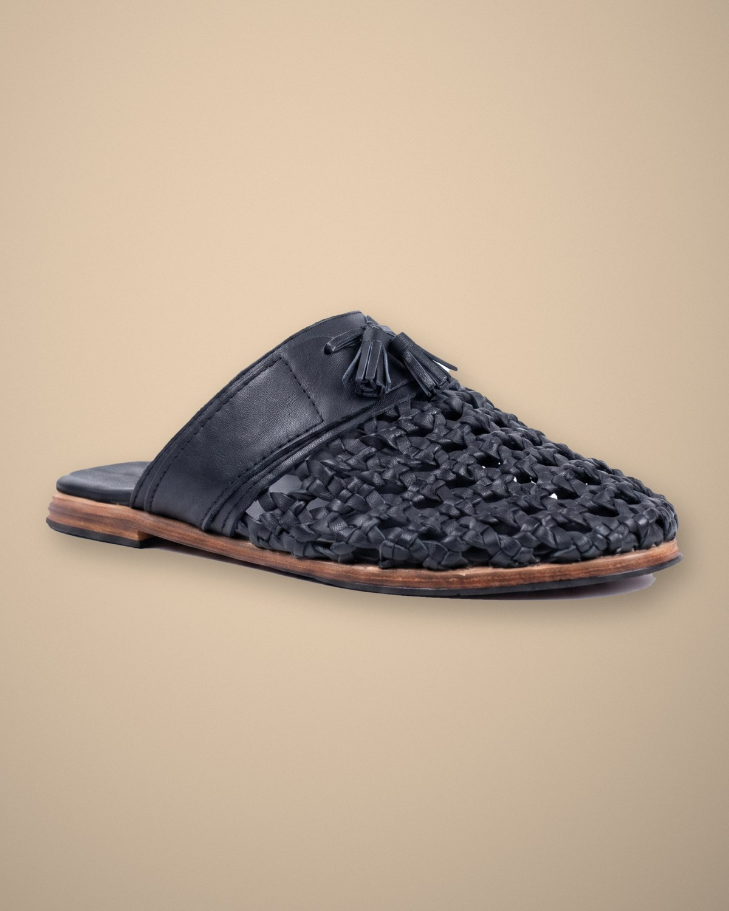

100% premium Balinese organic leather · Handmade
A backless mule in hand-knotted leather, finished with a small leather tassel. Made entirely by hand by a local leather artist in Bali.
Colour — Black
Size (EU)
USD 220
Loom is woven the slow way: strips of organic leather knotted by hand, one crossing at a time, by a leather artist in Bali. No two pairs are exactly alike, and the leather softens and darkens the more you wear it.
Wipe with a dry cloth, keep away from long soaks, and condition the leather now and then. Natural marks in the hide are part of the piece.